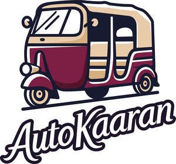

Trade Mark Journal No.2026/006 6 February 2026
UK00004328600 22 January 2026 (11,30,43)

- Class 11
- Ice cream freezers; Ice cream makers; Ice cream conservators; Ice cream makers, electric; Ice cream makers, self-refrigerating; Machines for making ice cream; Ice cream making machines; Electric vessels for making ices and ice cream; Apparatus for making ices and ice cream, electric; Ice machines.
- Class 30
- Ice cream; Cream (Ice -); Ice milk [ice cream]; Non-dairy ice cream; Dairy ice cream; Ice cream cones; Cones for ice cream; Ice cream desserts; Ice cream sandwiches; Yoghurt based ice cream [ice cream predominating]; Ice cream cakes; Ice cream confectionery; Sauces for ice cream; Ice cream drinks; Ice cream confections; Ice cream powder; Ice cream with fruit; Fruit ice cream; Vegan ice cream; Ice creams; Ice cream gateaux; Ice cream bars; Powders for ice cream; Ice cream powders; Imitation ice cream; Ice; Ice cream mixes; Ice cream substitute; Ice cream cone mixes; Ice, ice creams, frozen yogurts and sorbets; Powder for making ice cream; Ice cream stick bars; Fruit ice creams; Ice cream infused with alcohol; Frozen confectionery containing ice cream; Ice creams flavoured with chocolate; Powders for making ice cream; Ice creams containing chocolate; Mixtures for making ice cream; Soya-based ice cream substitutes; Instant ice cream mixes; Soy-based ice cream substitute; Ice lollies; Substances for binding ice cream; Binding agents for ice cream [edible ices]; Binding preparations for ice cream [edible ices]; Coffee-based beverages containing ice cream (affogato); Ice cream (Binding agents for -); Binding agents for ice cream; Mixtures for making ice cream confections; Ice candy; Ice confectionery; Cream pies; Soya based ice cream products; Ice confections; Cream cakes; Ice cubes; Fruit ice; Organic binding agents for ice cream; Ice lollies being milk flavoured; Ice candies; Mixtures for making ice cream products; Ice beverages with a chocolate base; Ice milk bars; Cream puffs; Ice for refreshment; Water ice; Cooling ice; Ice [frozen water]; Ice lollies containing milk; Edible ice; Mixtures for making ice creams; Ice-cream; Ice pops; Ice blocks; Cream buns; Ice beverages with a cocoa base.
- Class 43
- Ice cream parlors; Ice cream parlour services; Catering; Catering services; Hotel catering services; Mobile catering; Business catering services; Catering services for hospitality suites; Catering services for company cafeterias; Catering services for providing European-style cuisine; Outside catering; Mobile catering services; Outside catering services; Catering services for providing Japanese cuisine; Catering services for schools; Catering services for educational establishments; Catering services for hospitals; Rental of catering equipment; Catering services for the provision of food; Providing food and drink catering services for convention facilities; Providing food and drink catering services for exhibition facilities; Catering of food and drinks; Food and drink catering for banquets; Catering for the provision of food and beverages; Catering in fast-food cafeterias; Catering services for conference centers; Food and drink catering; Catering of food and drink; Catering (Food and drink -); Providing food and drink catering services for fair and exhibition facilities; Consultancy services in the field of food and drink catering; Organisation of catering for birthday parties; Charitable services, namely providing food and drink catering; Catering services for the provision of food and drink; Office catering services for the provision of coffee; Food and drink catering for institutions; Catering for the provision of food and drink; Catering services specialising in cutting ham for fairs, tastings and public events; Catering services for retirement homes; Catering services specialised in cutting ham by hand, for fairs, tastings and public events; Catering services for nursing homes; Food and drink catering for cocktail parties; Providing restaurant services; Banqueting services; Restaurant services; Take-away restaurant services; Carvery restaurant services; Restaurant services incorporating licensed bar facilities; Take-out restaurant services; Providing banquet and social function facilities for special occasions; Hotel restaurant services; Self-service restaurant services; Fast-food restaurant services; Services for providing food; Bartending services; Mobile restaurant services; Take-away food services; Bar and restaurant services; Restaurant and bar services; Restaurants; Serving food and drink for guests in restaurants.
Autokaaran Ltd